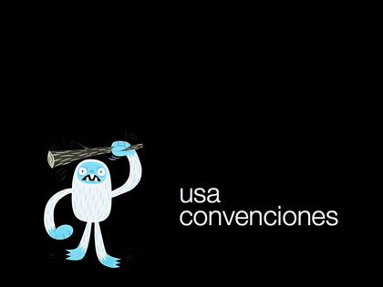

usa convenciones
Son imprescindibles. Tanto si trabajamos en equipo como solos las convenciones nos ahorran tiempo y explicaciones. Pequeñas reglas que nos ayudan a retomar código antiguo o entender cómo funciona el trabajo de un compañero.
Un ejemplo. Usar la clase active cuando tenemos una lista de elementos y tenemos que marcar uno o varios como activos. Además aplicarlo siempre al primer elemento de la jerarquía.
<ul>
<li><a href="#">elemento 1</a></li>
<li class="active"><a href="#">elemento 2</a></li>
<li><a href="#">elemento 3</a></li>
</ul>